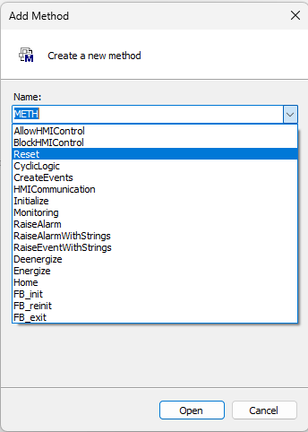

Self-Contained
Self-Contained
These are components that are created from scratch, with no preexisting code other than the FB_ComponentBase. They can be a simple component for a single output, or a more complex component with multiple inputs and outputs. In the below example we will create a simple component to control a solenoid. The simple version of this component will have the ability to energize and de-energize the output, and will have a property to read the status of the solenoid.
Note
This Simple Solenoid does not properly comply with the rules of the SPT Framework as we are not returning a value from the Energize and Deenergize methods. This is done to keep the example simple. The Better Solenoid will return a value from the Energize and Deenergize methods.
Simple Solenoid:
- Add the
SPT Base Typeslibrary to your project - Create a function block that
Extends FB_ComponentBaseand name itFB_Component_Solenoid - Remove the
VAR_INPUTandVAR_OUTPUTsections of the declaration1 2 3 4 5 6 7
FB_Component_Solenoid EXTENDS FB_ComponentBase -VAR_INPUT -END_VAR -VAR_OUTPUT -END_VAR VAR END_VAR -
Declare a local variable for the output
1 2 3
VAR _Energize AT %Q* : BOOL; END_VAR -
Create 2 methods that return a BOOL, one to turn on the output, and one to turn off the output
Method Declaration 1METHOD Energize : BOOL;Method Implementation 1_Energize := TRUE;Method Declaration 1METHOD Deenergize : BOOL;Method Implementation 1_Energize := FALSE; -
Create a property that returns a BOOL to read that value of the output
Energized.Get()
1Energized := _Energize; -
To test the Simple Solenoid create an instance of it in MAIN and add the following code:
1 2 3 4
MAIN VAR Solenoid : FB_Component_Solenoid; END_VAR1 2 3 4 5
Solenoid.CyclicLogic(); IF NOT Solenoid.Energized THEN Solenoid.Energize(); END_IF
Note
We are not yet making use of anything within the CyclicLogic() method, it is important to build the habit of always calling it. As not doing so will cause problems in the future.
Better Solenoid:
While the above Simple Solenoid is functional, to comply with the SPT Framework standards a few changes need to be made. The Better Solenoid will return a value from the Energize() and Deenergize() methods, while also implementing the use of the _Busy and _Error status variables.
We will also be adding an inhibit property to prevent the solenoid from operating, along with method to home the solenoid and a few other features.
-
Add a new Structure and declare the %Q variable
Structure Declaration 1 2 3 4 5
TYPE ST_IO_Solenoid : STRUCT Energize AT %Q* : BOOL; END_STRUCT END_TYPE -
Remove the %Q variable and declare an instance of the structure in the FB
1 2 3 4 5
FB_Component_Solenoid EXTENDS FB_ComponentBase VAR - _Energize AT %Q* : BOOL; + IO : ST_IO_Solenoid; END_VAR -
Update the Methods and Properties to use the new instance of the IO structure by replacing
_EnergizewithIO.EnergizeMETHOD Energize 1 2
- _Energize := TRUE; + IO.Energize := TRUE;METHOD Deenergize 1 2
- _Energize := FALSE; + IO.Energize := FALSE;Property Energized.Get() 1 2
- Energized := _Energize; + Energized := IO.Energize; -
Create convenience properties for other statuses
Deenergized.Get() 1Deenergized := NOT IO.Energize; -
Improve the command methods by replacing the existing code with the following
Energize() 1 2 3 4 5 6 7 8 9
//Prepare to Return FALSE in case the method is not able to complete Energize := FALSE; //Check for conditions and issue command IF NOT _Busy AND NOT _Error THEN IO.Energize := TRUE; //Return TRUE to indicate that the command was accepted Energize := TRUE; END_IF -
Repeat for the Deenergize() method
Denergize() 1 2 3 4 5 6 7 8 9
//Prepare to Return FALSE in case the method is not able to complete Deenergize := FALSE; //Check for conditions and issue command IF NOT _Busy AND NOT _Error THEN IO.Energize := FALSE; //Return TRUE to indicate that the command was accepted Deenergize := TRUE; END_IFNote
The
_Busyproperty of the base classFB_ComponentBaseis initialized to TRUE and we are now monitoring it in theEnergize()andDeenergize()methods, we must set it to FALSE for our methods to complete properly. -
Add the
CyclicLogic()method to theFB_Component_Solenoid, it is important to name this method exactly the same as the name used in the base classFB_ComponentBasesince we are overriding that method.CyclicLogic() 1 2 3 4 5 6 7 8
IF NOT _InitComplete THEN _InitComplete := Initialize(); RETURN; END_IF _Busy := FALSE; SUPER^.CyclicLogic();Note
Part of the design of the framework is to not process anything within the
CyclicLogic()method until the Initialization process is completed. Therefore, we always start with calling theInitialize()method until it returns TRUE. After which we no longer call theInitialize()method.We set
_Busyto FALSE as none of the commands we are currently using will take more than one PLC cycle.Finally, we call the
CyclicLogic()method of the base class usingSUPER^CyclicLogic(). This will ensure that any required code of the framework is also updated. -
Temporary Configuration Properties - Some commands are simple enough that they do not need a method, and some properties need to be available for both Reading and Writing.
Declare a local variable that will be controlled by the property
1 2 3 4 5
FB_Component_Solenoid EXTENDS FB_ComponentBase VAR IO : ST_IO_Solenoid; + _Inhibit : BOOL; END_VAR -
Add the Inhibit property that will be used to disable commands
Inhibit.Set 1_Inhibit := Inhibit;Inhibit.Get 1Inhibit := _Inhibit; -
Update the methods to check the _Inhibit value before issuing the command
Energize() 1 2 3 4 5 6 7 8 9 10 11
Energize := FALSE; +IF _Inhibit THEN + Trace('Energize Inhibited'); + RETURN; +END_IF IF NOT _Busy AND NOT _Error THEN IO.Energize := TRUE; Energize := TRUE; END_IF -
Add the same code to the Deenergize() method and change the TRACE message.
Deenergize() 1 2 3 4 5 6 7 8 9 10 11
Deenergize := FALSE; +IF _Inhibit THEN + Trace('Deenergize Inhibited'); + RETURN; +END_IF IF NOT _Busy AND NOT _Error THEN IO.Energize := FALSE; Deenergize := TRUE; END_IFNote
The
FB_ComponentBasehas a property forInSimulation, the code that implements your component can set/get this variable. The default implementation ofInSimulationis to log a message when it is set to TRUE. Any other use of the variable would be up to you.
HMI Control
FB_ComponentBase provides some basic functionality to manage a component’s interaction with an HMI. Mainly providing status information about the component in general: Busy, Error, ErrorID, InSimulation, and even the provided Name.
-
Add the following 4 structures, with the respective variables. Take note that the ST_HMI_ structure contains an instance of the other 3, and the Config structure does not yet contain any variables. It is important to provide unique and descriptive names for each structure type.
ST_Command_Solenoid 1 2
Energize : BOOL; Deenergize : BOOL;ST_Config_Solenoid 1//NoneST_Status_Solenoid 1 2 3
Energized : BOOL; Deenergized : BOOL; Inhibited : BOOL;Create an instance of the ST_HMI_Solenoid in your component.ST_HMI_Solenoid 1 2 3
Cmd : ST_Command_Solenoid; Cfg : ST_Config_Solenoid; Sts : ST_Status_Solenoid;1 2 3 4 5 6
FB_Component_Solenoid EXTENDS FB_ComponentBase VAR IO : ST_IO_Solenoid; _Inhibit : BOOL; + HMI : ST_HMI_Solenoid; END_VAR -
Add the
HMICommunication()method to your FB. In this method we will add the code to read and write to the previously created HMI structures. It is important that this method be named exactly as the one in theFB_ComponentBase, as we will be overriding that method. Additionally, it is important to note that we do not have to call this method directly as it will be called by theCyclicLogic()method of the base class.
The code in this method will accept requests from the HMI, verify that the HMI is allowed to control the component (i.e. machine is in Manual), and provide specific status information to the HMI. Commands from the HMI are typically received through a rising trigger, this facilitates a send and forget methodology and keeps variables from getting left on.Declare a rising trigger in the component at the function block level
1 2 3 4 5 6 7
FB_Component_Solenoid EXTENDS FB_ComponentBase VAR IO : ST_IO_Solenoid; _Inhibit : BOOL; HMI : ST_HMI_Solenoid; + HMICommand_Solenoid_RT : R_TRIG; END_VAR -
The
FB_ComponentBasehas a similar RT and it is important to not create a conflict with it. Therefore, the input conditions for our RT will be that HMI control is allowed, the base is not actively sending a command, and then the commands we wish to monitor from the HMI.
In theHMICommunication()method, add the following code to the beginning of the method.HMICommunication() 1 2 3 4 5
HMICommand_Solenoid_RT(CLK := //Internal checks (ComponentBase_Hmi.Status.HMIControlAvailable AND NOT HMICommandActive_Base) //Commands from HMI AND (HMI.Cmd.Energize XOR HMI.Cmd.Deenergize)); -
Next, we need to inform the base class that we have accepted a command and disallow it from accepting one until we are done. The variable
HMICommandActive_Descendantis already declared in theFB_ComponentBasefor this purpose.
HMICommunication() 1 2 3 4 5
HMICommandActive_Descendant := //Internal Checks – same as the RT ComponentBase_Hmi.Status.HMIControlAvailable AND //Commands from HMI (HMI.Cmd.Energize OR HMI.Cmd.Deenergize); -
We then need to respond to the Commands received from the HMI based on the acceptance through the rising edge trigger and turn off those commands. Notice that we are calling the same methods that the machine code will call.
HMICommunication() 1 2 3 4 5 6 7 8 9 10 11
IF HMICommand_Solenoid_RT.Q THEN IF HMI.Cmd.Energize THEN Energize(); END_IF IF HMI.Cmd.Deenergize THEN Deenergize(); END_IF // HMI.Cmd.Energize := FALSE; HMI.Cmd.Deenergize := FALSE; END_IF - One of the last things to do is update the status information going back to the HMI.
HMICommunication() 1 2 3
HMI.Sts.Energized := IO.Energize; HMI.Sts.Deenergized := NOT IO.Energize; HMI.Sts.Inhibited := _Inhibit; - Lastly it is important to call the method of the base class.
HMICommunication() 1SUPER^.HMICommunication();
Other Methods and Properties
Other command methods could be used to help in the implementation of a component.
As an example, we could consider a Home() method.
The position for homing would need to be configurable as Energized or Deenergized,
and then the appropriate method could be called from the Home() method.
While this might seem trivial it will allow for the programmer who is implementing the component to write their code as Component.Home() and in one location set a property for the Component to change how it responds. HomeIsDeenergized := TRUE.
Then when the need arises they can change only the HomeIsDeenergized property from TRUE to FALSE, and all of the calls to the Home() method will respond accordingly.
- Within
ST_Config_Solenoidadd the following variable to the structureST_Config_Solenoid 1HomeIsDeenergized : BOOL; - Add a property for HomeIsDeenergized
HomeIsDeenergized.Get 1HomeIsDeenergized := HMI.Cfg.HomeIsDeenergized;HomeIsDeenergized.Set 1HMI.Cfg.HomeIsDeenergized := HomeIsDeenergized; -
Add a Home() method that returns a BOOL
Method Declaration 1METHOD Home : BOOLMethod Implementation 1 2 3 4 5 6
Home := FALSE; IF HMI.Cfg.HomeIsDeenergized THEN Home := Deenergize(); ELSE Home := Energize(); END_IFNote
The
Home()method sets the return value to FALSE at the beginning. Afterwards the selectedDeenergize()orEnergize()method is called, each of those will return TRUE or FALSE depending on their completion and that value will then be returned from theHome()method.The property
HomeIsDeenergizedis currently FALSE by default. This can be handled in several ways, but this is a great opportunity to show the purpose of theInitialize()method. -
Add the
Initialize()method and the following code. Again, this method name needs to match the name used by the base class.Method Declaration 1METHOD Initialize : BOOL;Method Implementation 1 2
HomeIsDeenergized := TRUE; Initialize := SUPER^.Initialize();This code sets the value of the property and then calls the method of the base class so that it may handle the initialization of
FB_ComponentBase.Note
Notice that we are setting the Property
HomeIsDeenergizedwhich calls theSet()method of that property. Internally that will write directly toHMI.Cfg.HomeIsDeenergized. Within theInitialize()method we could also write toHMI.Cfg.HomeIsDeenergized; however, if we do this then we are bypassing any code that could be placed within theSet()method to ensure data integrity and also ensure that the code in theInitialize()method will continue to work properly if the internal name within theHMI.Cfgstructure was to change. When making a decision of which variable to write to, it is better to interact with variables that will be external to the component as they will have a tendency to not change as doing so will potentially break the build for everyone using the component.Tip
While it is conveienient to set the configuration properties in the initialize method, it is also possible to set them in the
CyclicLogic()method. This is useful if you want to change the configuration properties at runtime. For example, if you have a solenoid that can be configured to either energize or de-energize when homing, you could set theHomeIsDeenergizedproperty in theCyclicLogic()method based on some external condition.
Testing the Better Solenoid
To test the Better Solenoid, we can edit the code in MAIN, but first notice that even with all the changes we have made the previous implementation code in MAIN is not required to change.
-
Add the test code below to
MAINand declare the proper variables.MAIN Declaration 1 2 3 4 5 6 7 8
Status : BOOL; Start : BOOL; Stop : BOOL; Home : BOOL; Inhibit : BOOL; SetHomeDeenergize : BOOL; SetHomeEnergize : BOOL; HomeActive : BOOL;While the methods are returning a value, the previous code does not make use of that value. If you wish to confirm these return values, the test code can be modified as follows:MAIN Implementation 1 2 3 4 5 6 7 8 9 10 11 12 13 14 15 16 17 18 19 20 21 22 23 24 25 26 27 28 29 30 31 32 33 34 35
Solenoid.CyclicLogic(); Status := Solenoid.Energized; IF Start THEN Start := FALSE; Solenoid.Energize(); END_IF IF Stop THEN Stop := FALSE; Solenoid.Deenergize(); END_IF IF SetHomeDeenergize THEN SetHomeDeenergize := FALSE; Solenoid.HomeIsDeenergized := TRUE; END_IF IF SetHomeEnergize THEN SetHomeEnergize := FALSE; Solenoid.HomeIsDeenergized := FALSE; END_IF IF Home THEN Home := FALSE; Solenoid.Home(); END_IF IF Inhibit THEN Inhibit := FALSE; Solenoid.Inhibit := TRUE; Solenoid.Energize(); ELSE Solenoid.Inhibit := FALSE; END_IF1 2 3 4 5
IF Home THEN Home := FALSE; - Solenoid.Home(); + HomeActive := Solenoid.Home(); END_IF
Additionaly the return value of the method can be checked by the '''IF''' statement
1 2 3 4 5 | |
Creating an Interface
An interface can be added to allow for proper access from higher level code. The interface(s) should encompass the methods and properties needed to control and monitor the component.
-
Create the interface
I_Component_Solenoid -
Add the following to the Interface
Methods 1 2 3
Deenergize Energize HomeNotice that we did not add all of the methods and properties ofProperties 1 2 3 4
Deenergized Energized HomeIsDeenergized InhibitFB_Component_Solenoidto the interface. We specifically did not add any that are a part of the base classFB_ComponentBase, as they are already a part of the interface for the base class and we don’t need to add them again. When adding the methods and properties ensure that the spelling and return type matches and check the Get/Set of the properties and Delete the ones that are not needed. In this case the Set methods of Energize and Deenergize can be deleted. -
Change the declaration of the component to implement the interface
Adding the interface after creating the class (Function Block) can feel backwards to some, and while prior proper planning can help minimize this it is important to know that interfaces can be modified as needed. Testing the interface can be done by declaring an instance of the interface, assigning the instance of the class to the interface, and replacing the class instance with the interface instance throughout the code.1FUNCTION_BLOCK FB_Component_Solenoid EXTENDS FB_ComponentBase IMPLEMENTS I_Component_Solenoid -
Declare an instance of the interface in
MAIN1ipSolenoid : I_Component_Solenoid; - Assign the instance of the class to the instance of the interface after
Solenoid.CyclicLogic()As above replace the calls to1 2 3 4
Solenoid.CyclicLogic(); +ipSolenoid := Solenoid; -Status := Solenoid.Energized; +Status := ipSolenoid.Energized;SolenoidwithipSolenoid, but only where the methods and properties ofipSolenoidare used. This means thatSolenoid.CyclicLogic()should not be changed, becauseCyclicLogic()is not part of theipSolenoidinterface. The code is now ready for testing with the interface.
Note
Although this may seem like it is not useful, once we get deeper into object-oriented programming these interfaces will become very powerful and useful. To prevent having to modify your code it is best to create the interface before creating the class and try to predict the properties and methods that will be needed. Even if you start with an empty interface and add to it as needed during the development cycle it will save you time in the long run. Another point to note is that you can copy and paste between the FB and the Interface. If you wish to create methods and properties on the FB first, you can then copy them from the FB and paste them to the Interface.
Warning
DO NOT drag and drop from the FB to the Interface, as this will remove the code.
Reset
FB_ComponentBase and Implements the interface I_ComponentBase which defines the method Reset(). This method is used by the base class to call F_ClearAllEventsInClass, which currently only contains the message for InSimulation. However this allows us to override and call the Reset() method for all components via the interface. For this example we will deenergize the Solenoid in the Reset() method.
- Add the a method to the component and select
Resetfrom theNamedrop down list.  - For the implementation of the method, return the proper values, call the
Reset()method of the base class, and theDeenergize()method.The method can be called from MAIN using the following, but take notice that we are not using the interface, and if you look at the intellisense drop down list of ipSolenoid, the Error and Reset items are not listed.Reset() 1 2 3 4
Reset := FALSE; IF SUPER^.Reset() THEN Reset := Deenergize(); END_IFIf we extend the I_Component_Solenoid interface from the I_ComponentBase interface, then the methods and properties of that interface will be available. Double click on theMAIN 1 2 3
IF Solenoid.Error THEN Solenoid.Reset(); END_IFI_Component_Solenoidand modify the declaration to match the followingReturn to MAIN and update the code to use the interface ipSolenoidI_Component_Solenoid 1INTERFACE I_Component_Solenoid EXTENDS I_ComponentBaseMAIN 1 2 3
IF ipSolenoid.Error THEN ipSolenoid.Reset(); END_IF